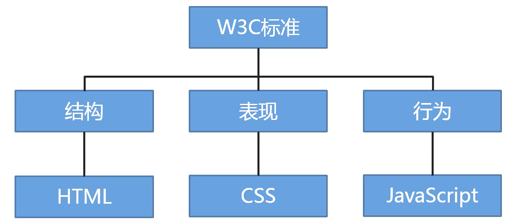

HTML（1-基本概念）
网页结构思想
根据 W3C 标准，一个网页主要由三部分组成：结构、表现还有行为。
- 结构（骨架）：HTML 用于描述页面的结构
- 表现（皮肤）：CSS 用于控制页面中元素的样式
- 行为（交互）：JavaScript 用于响应用户操作


版本迭代
| 版本 | 发布时间 | 主要特点 |
|---|---|---|
| HTML 2.0 | 1995 | 首个标准化版本 |
| HTML 3.2 | 1997 | 添加表格、applet和文本环绕图片等功能 |
| HTML 4.01 | 1999 | 引入CSS支持，分离结构与表现 |
| XHTML 1.0 | 2000 | 基于XML的严格语法版本 |
| HTML5 | 2014 | 新增语义元素、多媒体支持、本地存储、Canvas/WebGL等 |
| HTML5.1 | 2016 | 小幅度更新 |
| HTML5.2 | 2017 | 新增dialog元素等 |
| HTML5.3 | 2021 | 工作草案，包含更多现代Web应用特性 |
什么是 HTML？
HTML 指的是超文本标记语言（Hyper Text Markup Language）, 它是用来描述网页的一种语言。
HTML 不是一种编程语言，而是一种标记语言（markup language）， 标记语言是一套标记标签（markup tag）。
超文本的含义
它可以加入图片、声音、动画、多媒体等内容（超越文本限制），可以从一个文件跳转到另一个文件，于世界各地主机的文件连接（超级链接文本）
常用浏览器及其内核
浏览器内核（渲染引擎）：负责读取网页内容，整理讯息，计算网页的显示方式并显示页面。
| 浏览器 | 内核 | 备注 |
|---|---|---|
| IE | Trident | IE、猎豹安全、360、百度浏览器 |
| fireFox | Gecko | 火狐浏览器内核 |
| Safari | Webkit | 苹果浏览器内核 |
| Chrome/Opera | Blink | Chrome/Opera 浏览器内核 |
内核工作流程：
1 | graph TD |
Web 标准
Web 标准是由 W3C 组织和其他标准化组织制定的一系列标准的集合。
为什么需要 Web 标准？
浏览器不同，它们显示的页面或者排版有些许差异，遵循 Web 标准除了可以让不同的开发人员写出的页面更标准、更统一外，还有以下优点：
- 让 Web 标准发展前景更为广阔
- 内容能被更广泛的设备访问
- 更容易被搜索引擎了搜索
- 降低网站流量费用
- 易于维护
- 提高页面浏览速度
本博客所有文章除特别声明外，均采用 CC BY-NC-SA 4.0 许可协议。转载请注明来源 爱编程的小生！

 ），文档结构包括声明、根元素，以及和部分。HTML5简化了语法，支持自闭合标签（如
），文档结构包括声明、根元素，以及和部分。HTML5简化了语法，支持自闭合标签（如 评论